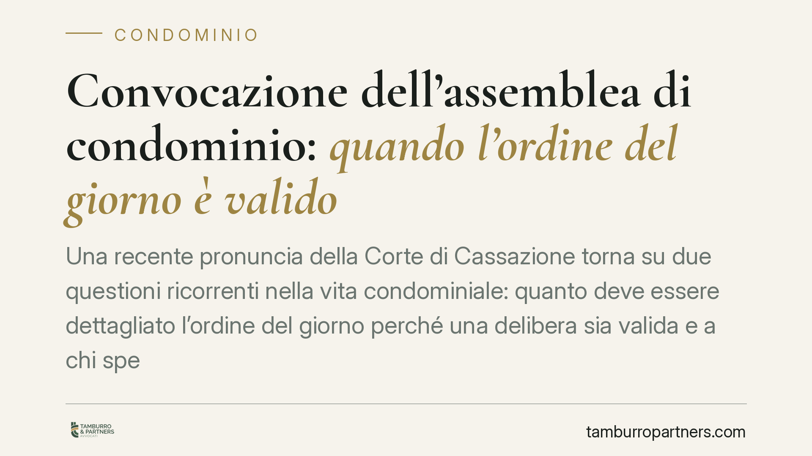

Convocazione dell'assemblea di condominio: quando l'ordine del giorno è valido
Una recente pronuncia della Corte di Cassazione torna su due questioni ricorrenti nella vita condominiale: quanto deve essere dettagliato l'ordine del giorno perché una delibera sia valida e a chi spettano le spese dei balconi. La Corte conferma che basta un'indicazione chiara ed essenziale degli argomenti e ribadisce che i costi dei balconi privati non gravano su tutti i condòmini.

Il caso
La controversia nasce dall'impugnazione di una delibera assembleare da parte di una condomina. Due i profili contestati: la genericità dell'ordine del giorno allegato alla convocazione e l'addebito, a carico di tutti i condòmini, di spese relative a balconi di proprietà esclusiva.
La Corte di Cassazione ha affrontato entrambi i punti, fornendo indicazioni utili ben oltre il singolo giudizio.
Inquadramento normativo
La convocazione dell'assemblea è disciplinata dall'art. 66 delle disposizioni di attuazione del codice civile, che impone di indicare l'ordine del giorno, cioè l'elenco degli argomenti su cui si delibererà. La ratio è consentire a ciascun condòmino di decidere consapevolmente se partecipare e come orientare il proprio voto.
Secondo la Corte, l'ordine del giorno non deve contenere una descrizione analitica di ogni aspetto: è sufficiente che individui l'argomento in modo chiaro ed essenziale, così da rendere riconoscibile la materia oggetto di decisione. Una formulazione sintetica è quindi legittima; è invece inidonea la clausola "varie ed eventuali", che non consente di prevedere il contenuto della delibera e non può fondare decisioni vincolanti su temi nuovi.
Sul fronte delle spese, l'art. 1135 c.c. disciplina le attribuzioni dell'assemblea in materia di gestione e ripartizione dei costi. La Corte ricorda che l'assemblea può deliberare solo sulle spese che riguardano parti comuni o che la legge pone a carico della collettività condominiale. Non può imputare a tutti i condòmini oneri relativi a beni di proprietà esclusiva.
Balconi: la distinzione che fa la differenza
Il punto più delicato riguarda i balconi. La giurisprudenza distingue da tempo due situazioni:
- i balconi che costituiscono prolungamento della singola unità immobiliare (il piano di calpestio, la soletta, i parapetti nella loro funzione di protezione) sono di proprietà esclusiva del condòmino. Le relative spese di manutenzione gravano solo su di lui;
- gli elementi del balcone che svolgono una funzione decorativa o di decoro architettonico dell'intero edificio (rivestimenti, frontalini, fregi, elementi ornamentali visibili dall'esterno) possono invece essere considerati parti comuni, con ripartizione dei costi tra tutti i condòmini.
La valutazione va condotta caso per caso, verificando in concreto la natura e la funzione dell'elemento interessato dall'intervento. Addebitare in modo indifferenziato a tutti i condòmini l'intera spesa di un balcone privato è illegittimo.
Implicazioni pratiche
Per l'amministratore, la pronuncia conferma che la convocazione può essere redatta in forma sintetica, purché l'argomento sia riconoscibile. Resta però il rischio di delibere invalide quando si decide su temi non previsti o genericamente richiamati.
Per il singolo condòmino, l'orientamento rafforza la tutela contro ripartizioni di spesa non corrette. Chi si veda addebitare costi di balconi altrui, o di parti esclusive, dispone di argomenti solidi per contestare la delibera.
Va ricordato che l'impugnazione delle delibere assembleari è soggetta al termine di trenta giorni previsto dall'art. 1137 c.c., decorrente dalla deliberazione per i presenti dissenzienti o astenuti e dalla comunicazione del verbale per gli assenti. Si tratta di un termine di decadenza: superato, la delibera annullabile diventa definitiva.
Cosa fare in concreto
- Verifica l'ordine del giorno ricevuto con la convocazione: controlla che ogni argomento su cui si voterà sia indicato in modo riconoscibile e diffida dalle formule generiche come "varie ed eventuali".
- Distingui la natura delle spese deliberate: separa gli interventi su parti comuni da quelli relativi a beni di proprietà esclusiva, in particolare per i balconi.
- Controlla le tabelle millesimali applicate al riparto e segnala eventuali addebiti incongrui prima dell'approvazione del rendiconto.
- Annota le date rilevanti (deliberazione o ricezione del verbale) per non lasciar decorrere il termine di trenta giorni per l'impugnazione.
- È opportuno far esaminare verbale e tabelle millesimali da un professionista prima di procedere a un'impugnazione.
Disclaimer
Contributo informativo a cura di Tamburro & Partners Avvocati – Avv. Giuseppe Tamburro. Non costituisce parere legale.
Ogni condominio ha una storia a sé.
Se gestisci un'amministrazione e vuoi un confronto su una specifica questione condominiale, scrivi allo studio. Ti rispondiamo entro un giorno lavorativo.